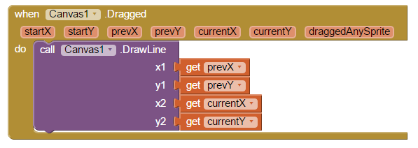

'Digital Doodle' Drawing App
Created: February 3, 2015
This mobile application is composed of a blank canvas which can be drawn on by the user. It was created in the course Game Design 2 using MIT App Inventor, and their tutorial which can be found here.
The code, in the form of a block interface, detects when the user touches the canvas, keeping track of where. A line is then drawn from where the user started to touch the screen, to where they stopped.
